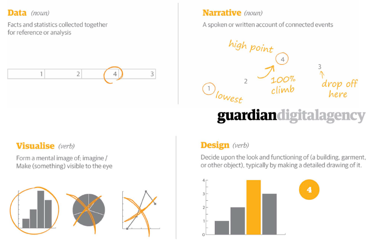

Infographics, Design
Learn the art of visual storytelling
Posted by Jeya Karthika on .Like I mentioned in my previous post, some day in the last fortnight, I got an opportunity to attend the "Intro to Data Visualization" workshop organized by the SLQ Edge. I had no idea Data visualization involved a lot of data analysis and coding too.. Though the class was oriented towards data-driven journalism, the concepts, tools and methods were pretty much common. (For those who wonder what I mean by data-driven journalism, it is nothing but the the process of filtering large amounts of data, visualizing and conveying a story from the same.)
I loved the quote with which the session started,
"Communicating complex data and intricate ideas through clear and beautiful visual storytelling."
- Tobias Sturt, Design Manager of The Guardian Digital Agency.
Which was followed by the slide below explaining the key terms. (Source: From the Intro to Data Visualization Handouts)
 Slide explaining the key terms (Source: From the Intro to Data Visualization)
The instructor took us through a good number of amazing data visualizations both interactive and static, and at the same time explaining how data, story, design and shareability combine to create a good data-visualization. Clicking the chart below will take you to the article by dashburst which explains the same.
Moving on from there, we were taken through data sources like data.gov.au , data preparation with tools like Data Wrangler, OpenRefine, etc.. and finally out of the shelf visualization tools and web apps. We also got to create some data visualizations with data from data.gov.au using visual.ly.
If you want to further look at data-visualizations, check out the website Information is beautiful. It distills the world’s data, information and knowledge into beautiful, interesting and, useful visualizations, infographics and diagrams.
"Show Me the Numbers: Designing Tables and Graphs to Enlighten" by Stephen Few is a good read to start with.
Well, that pretty much sums up the highlights from the workshop.